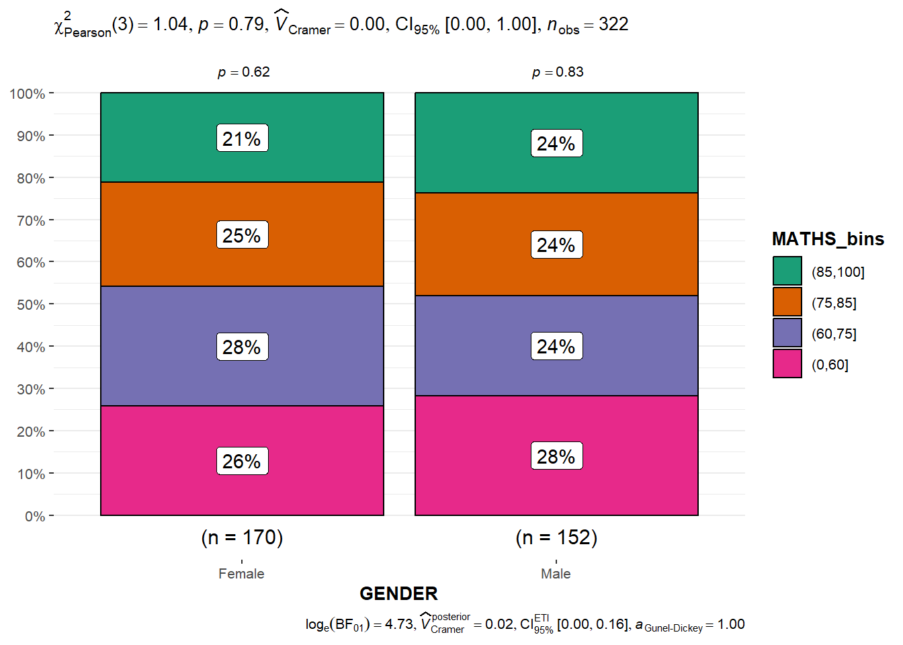

Visualising uncertainty is relatively new in statistical graphics. In this exercise, we will gain hands-on experience on creating statistical graphics for visualising uncertainty. By the end of this exercise we will be able to:
plot statistics error bars using ggplot2,
plot interactive error bars by combining ggplot2, plotly and DT,
create advanced by using ggdist, and
create hypothetical outcome plots (HOPs) by using ungeviz package.
2 Getting Started
2.1 Import and Launch R Packages
The following R packages will be used, they are:
tidyverse, a family of R packages for data science process,
plotly for creating interactive plot,
gganimate for creating animation plot,
DT for displaying interactive html table,
crosstalk for implementing cross-widget interactions (currently, linked brushing and filtering),
ggdist and ungeviz for visualising distribution and uncertainty, and
colorspace as toolbox for manipulating and assessing colours and palettes
package 'distributional' successfully unpacked and MD5 sums checked
package 'quadprog' successfully unpacked and MD5 sums checked
package 'ggdist' successfully unpacked and MD5 sums checked
The downloaded binary packages are in
C:\Users\fongb\AppData\Local\Temp\Rtmp6VKDFH\downloaded_packages
2.2 Import Data
For the purpose of this exercise, Exam_data.csv will be used.
exam_data <-read_csv("data/Exam_data.csv")
3 Visualising Uncertainty of Point Estimates: ggplot2 methods
A point estimate is a single number, such as a mean. Uncertainty, on the other hand, is expressed as standard error, confidence interval, or credible interval.
Important
Do not confuse the uncertainty of a point estimate with the variation in the sample.
In this section, we will learn how to plot error bars of maths scores by race using the data provided.
First, we use the below code chunk to derive the necessary summary statistics.
Next, the code chunk below will be uses the kabel() function in the knitr package which enables generation of well-formatted table in a variety of output formats. In this example, we want to display my_sum tibble data frame into html table format.
knitr::kable(head(my_sum), format ="html")
RACE
n
mean
sd
se
Chinese
193
76.50777
15.69040
1.132357
Indian
12
60.66667
23.35237
7.041005
Malay
108
57.44444
21.13478
2.043177
Others
9
69.66667
10.72381
3.791438
3.1 Plot standard error bars of point estimates
Now we are ready to plot the standard error bars of mean maths score by race as shown below. We can do so using geom_errobar() from the ggplot2 package.
ggplot(my_sum) +geom_errorbar(aes(x = RACE,ymin = mean - se,ymax = mean + se),width =0.2,colour ="black",alpha =0.9,linewidth =0.5) +geom_point(aes(x = RACE,y = mean),stat ="identity",color ="red",size =1.5,alpha =1) +ggtitle("Standard Error of Mean Maths Score by Race")
Note
The error bars are computed using the formula mean +/- se
For geom_point(), it is important to indicate stat = "identity". This argument is used to indicate that the y-axis variable represents actual data values, rather than a statistical transformation of the data
3.2 Plot confidence interval of point estimates
Instead of plotting the standard error bar of point estimates, we can also plot the confidence intervals of mean maths score by race.
ggplot(my_sum) +geom_errorbar(aes(x =reorder(RACE, -mean),ymin = mean -1.96*se,ymax = mean +1.96*se),width =0.2,colour ="black",alpha =0.9,linewidth =0.5) +geom_point(aes(x = RACE,y = mean),stat ="identity",color ="red",size =1.5,alpha =1) +labs(x ="Maths Score",title ="95% confidence interval of mean maths score by race")
Note
The confidence intervals are computed using the formula mean +/- 1.96*se
In this example, we sorted the error bars using the average maths scores in descending order using reorder(RACE, -mean)
The labs() argument of ggplot2 is used to change the x-axis label
3.3 Plot interactive error bars
The following code chunk plots interactive error bars for the 99% confidence interval of mean maths score by race.
ggdist is an R package that provides a flexible set of ggplot2 geoms and stats designed especially for visualising distributions and uncertainty.
It is designed for both frequentist and Bayesian uncertainty visualization, taking the view that uncertainty visualization can be unified through the perspective of distribution visualization:
for frequentist models, one visualises confidence distributions or bootstrap distributions (see vignette(“freq-uncertainty-vis”));
for Bayesian models, one visualises probability distributions (see the tidybayes package, which builds on top of ggdist)
4.1 Plot uncertainty of point estimates: ggdist methods
In the code chunk below, stat_pointinterval() of ggdist is used to build a visual for displaying distribution of maths scores by race.
exam_data %>%ggplot(aes(x = RACE,y = MATHS)) +stat_pointinterval() +labs(title ="Visualising confidence intervals of mean math score",subtitle ="Mean Point + Multiple-Interval Plot")

Note
This function comes with many arguments, and we can check the syntax reference for more details
exam_data %>%ggplot(aes(x = RACE,y = MATHS)) +stat_pointinterval(.width =0.95,.point = median,.interval = qi) +labs(title ="Visualising confidence intervals of mean math score",subtitle ="Mean Point + Multiple-Interval Plot")